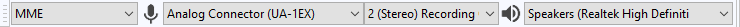

USB Recording
This is a very basic guide to recording with USB devices. More detailed information (and Mac instructions) can be found at Recording with USB turntables or USB cassette decks.
- Connect the USB cable of the turntable, or tapedeck, to the computer, then launch Audacity. If Audacity was already running when you connected the cable, restart Audacity or choose .
- Use the Device Toolbar to set the recording and playback devices and set the channels to "2(stereo) Recording Channels":
- 
- In this example on Windows, the output is set to the named speakers of the built-in computer sound device, the input is set to the USB turntable (usually called or including the phrase "USB Audio CODEC") and recording channels are set to stereo. Windows 10/8/7 calls most USB external devices "microphones". Some higher-end USB recording interfaces may appear as their explicit manufacturer's name.
- From the Transport Menu check "Software Playthrough" to be "on" to hear the turntable through the computer speakers; this setting can be toggled on/off easily from the Transport Menu.
- Then, ignoring any instructions in the manufacturer's guide to select "stereo mix", simply press the Record button
 on Transport Toolbar.
on Transport Toolbar.